Testing responsive images with srcset and sizes
Making an image-heavy portfolio site for an illustrator, I thought it about time I adopted a responsive images solution to deliver better quality photos to more-capable devices without penalising less-capable devices with bloated download sizes.
No art direction was involved and so the preferred solution was to use the new srcset and sizes attributes of the <img> tag. Look no further than this 10-part series by Cloud Four for everything you ever wanted or needed to know about responsive images.
To check things were working I started looking at the network requests to confirm what the browser was up to, but was surprised by what I saw, and so I set up this quick test site for a more methodical check.
TL;DR: The testing shows that the browser often requests the "wrong" version of an image or, worse, requests multiple sizes of the same image.
The test page and results are described below, the test page itself is here.
The test site is a crude page with a flexible-width sidebar and content area, each containing one image, which stack vertically below an arbitrary break point of 600px. The body has a max-width of 1000px.
The image sizes I generated are fairly abitrary. For the sidebar and content area images I chose sizes based upon resizing the browser width with a standard definition screen, and then doubled them to produce retina quality images. (I made the 2x images greyscale to help visually differentiate them when viewing the test site, but note that using srcset widths the browser chooses images based purely on dimensions and is unaware of "retina" or "non-retina".)
See section 9 of the Cloud Four series about a more reasoned approach to choosing what image sizes to generate.
My <img> tag definitions, then, were
<img id = "img--sidebar"
src = "img/sidebar-568.jpg"
srcset = "img/sidebar-301.jpg 301w,
img/sidebar-568.jpg 568w,
img/sidebar-602.jpg 602w,
img/sidebar-1136.jpg 1136w"
sizes = "(max-width: 600px) calc(100vw - 32px),
(max-width: 1000px) calc(33.33vw - 32px),
301px" >
and
<img id = "img--content"
src = "img/content-635.jpg"
srcset = "img/content-635.jpg 635w,
img/content-1270.jpg 1270w"
sizes = "(max-width: 600px) calc(100vw - 32px),
(max-width: 1000px) calc(66.67vw - 32px),
635px" >
That means the browser has 4 possible sizes to choose from when requesting the sidebar image (301px, 568px, 602px, and 1136px wide), and 2 possible sizes to choose from when requesting the content image (635px and 1270px wide).
Before rendering the page the browser can't know what size the image will display at, but we can and do, and we use the sizes attribute to tell the browser in advance.
In this example, we are testing against a screen size of 601px on a device with a pixel ratio of 2. The screen width in CSS pixels is 601px and in display pixels is twice that, or 1202px.
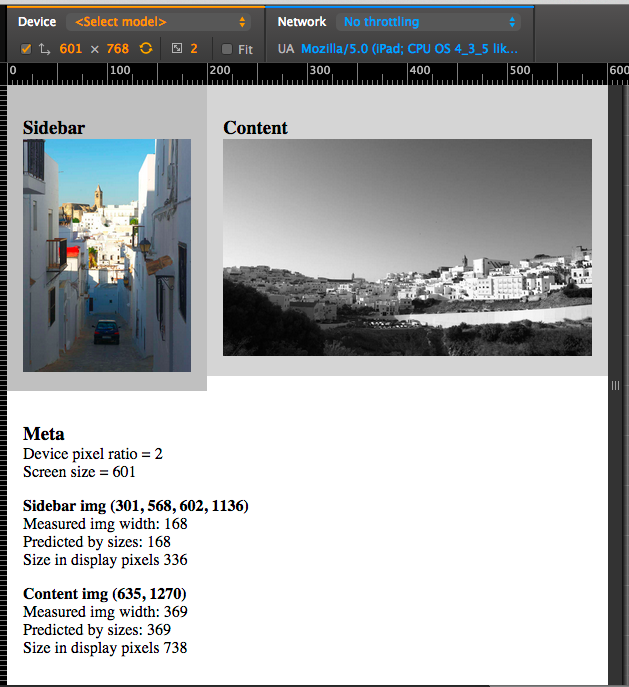
The meta data shows the actual size of each displayed image, as well as a check of our sizes attribute calculation, which confirms that we are correctly seeding the browser with the size the <img> will display at.
The size of the <img> in display pixels (width * dpi) is the key number the browser needs to determine which size image to download.
I would expect the browser to choose the next size up* and then scale it to fit, so in this example for a sidebar image of width 168px displayed 2x it would request the 568px source file. For a content image of width 369px displayed 2x it would request the larger 1270px image.
And that's just what happened.
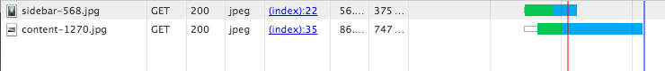
Woot! It works!
Sometimes.
For the actual testing I started with a browser width of 300px and then kept expanding by 100px, first testing with a screen resolution of 1x and then repeating for 2x.
Here are the results:
-
300px 1x
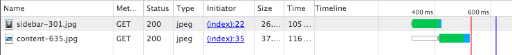
Sidebar: as expected
Content: as expected
-
300px 2x
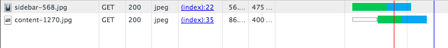
Sidebar: as expected
Content: requests larger file than needed
-
400px 1x
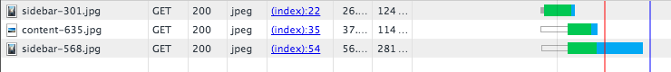
Sidebar: requests 2 sizes
Content: as expected
-
400px 2x
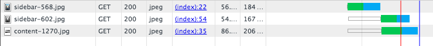
Sidebar: requests 2 sizes (BOTH "wrong")
Content: as expected
-
500px 1x
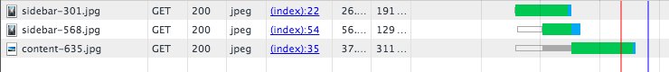
Sidebar: requests 2 sizes
Content: as expected
-
500px 2x
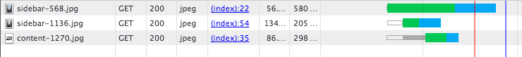
Sidebar: requests 2 sizes
Content: as expected
-
600px 1x
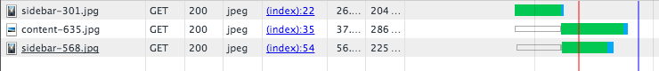
Sidebar: requests 2 sizes
Content: as expected
-
600px 2x
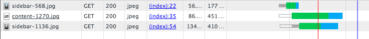
Sidebar: requests 2 sizes
Content: as expected
-
700px 1x

Sidebar: as expected
Content: as expected
-
700px 2x
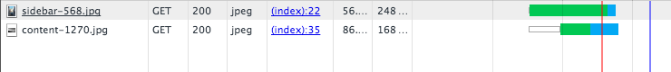
Sidebar: as expected
Content: as expected
-
800px 1x
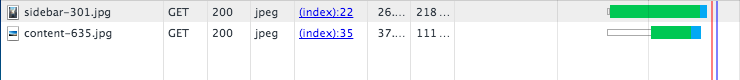
Sidebar: as expected
Content: as expected
-
800px 2x
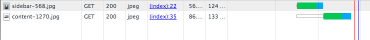
Sidebar: as expected
Content: as expected
-
900px 1x
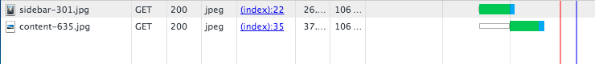
Sidebar: as expected
Content: as expected
-
900px 2x
Sidebar: as expected
Content: as expected
-
1000px 1x
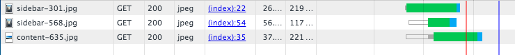
Sidebar: requests 2 sizes
Content: as expected
-
1000px 2x
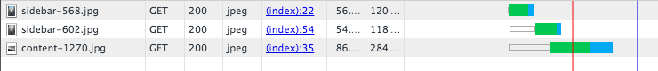
Sidebar: requests 2 sizes
Content: as expected
-
1100px 1x
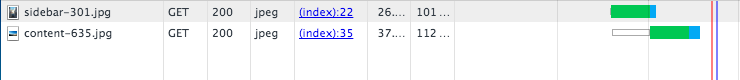
Sidebar: as expected
Content: as expected
-
1100px 2x
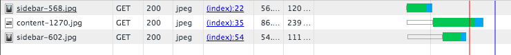
Sidebar: requests 2 sizes
Content: as expected
That's 18 tests loading 36 images, in which the browser got it "wrong" 10 times, nearly a third of the time. The most common problem was downloading more than one size of the same image.
My testing was limited to using OSX Chrome devtools rather than on a variety of real devices. When I have the chance to test on real retina devices I will update the results.
Note: Although I expected the browser to choose the next size up, when I chose the iPhone 6 size for testing, the content image size in display pixels would be 686px, and rather than go up to the next available size of 1270px and scale it down, the browser chose a slightly smaller image of 635px and upscaled it.
The source code is here on github.
If you have comments (please tell me I am doing it all wrong and everything works perfectly!) let me know on twitter or create a Github issue.